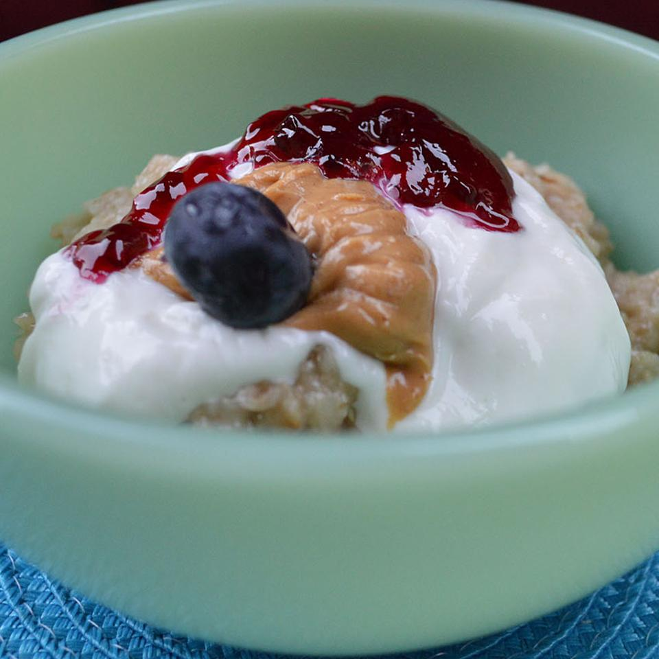

Greek Yogurt Oatmeal

Description
Nutrition Facts
Per Serving: 470 calories; protein 13.1g; carbohydrates 73g; fat 16g; cholesterol 11.3mg; sodium 272.4mg.
Ingredients
- ½ cup rolled oats
- ½ banana, sliced
- ½ ground cinnamon (Optional)
- 1 pinch salt
- 1 cup water
- ¼ cup Greek yogurt
- 2 tablespoons strawberry jam
- 1 tablespoon peanut butter
Steps
- Combine oats, banana, cinnamon, and salt in a microwave-safe bowl; add water and stir.
Cook in microwave until water is absorbed, 2 to 3 minutes.
Stir to evenly distribute cinnamon; let stand until slightly cooled, about 3 minutes.
- Spoon Greek yogurt, strawberry jam, and peanut butter over oatmeal; stir.